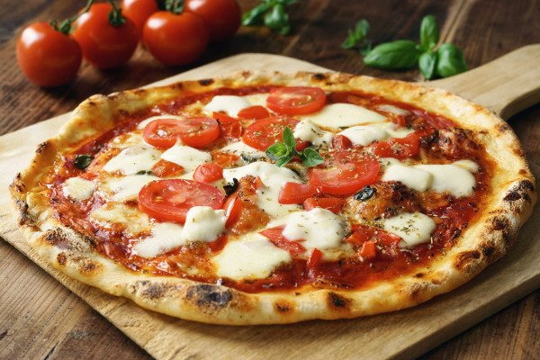
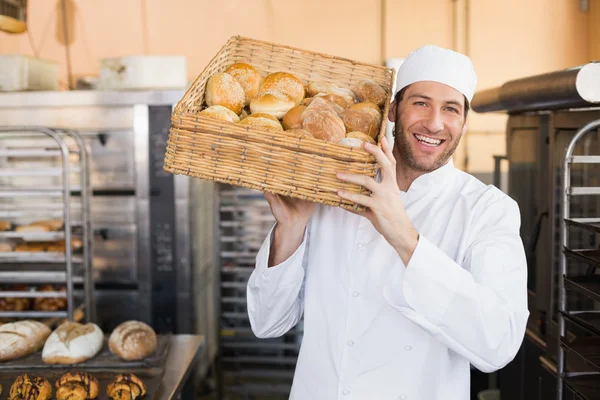

Familia Profesional: Gastronomía
Esta familia profesional comprende los conocimientos y habilidades vinculados a la elaboración, conservación y presentación de alimentos y productos de panadería, pastelería y cocina en general. Su propósito es formar personas competentes para desempeñarse en distintos ámbitos gastronómicos, aplicando normas de higiene, seguridad y calidad en los procesos de producción alimentaria.
Maestro Pizzero y Rotisero

Instructor/a: Graciela MassaHoras Cátedra Asignadas: 12hsHoras Cátedra total: 300hs Miércoles y viernes de 18:00 a 22:00 hs
Panadero/a

Instructor/a: Graciela MassaHoras Cátedra Asignadas: 12hsHoras Cátedra total: 540hs Miércoles y viernes de 18:00 a 22:00 hs